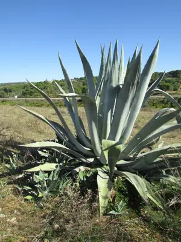

pranet · 出典付きの植物図鑑
アオノリュウゼツラン ☠
Agave americana L. · Asparagaceae

Agave americana, commonly known as the century plant, maguey, or American aloe, is a flowering plant species belonging to the family Asparagaceae. It is native to Mexico and the United States, specifically Texas. This plant is widely cultivated worldwide for its ornamental value and has become naturalized in various regions, including Southern California, the West Indies, South America, the Mediterranean Basin, Africa, the Canary Islands, India, China, Thailand, New Zealand and Australia.
出典: Wikipedia 英語版「Agave americana」 · CC BY-SA 4.0
異名: Agave gracilispina (Rol.-Goss.) Engelm. ex Trel., Agave ramosa Moench, Agave spectabilis Salisb., Agave variegata Steud., Agave virginica Mill., Aloe americana (L.) Crantz
同定や利用は自己責任でお願いします。この図鑑だけを根拠に野生の植物を食べないでください。
出典
- 学名: World Flora Online Plant List 2026-06 · CC0 1.0
- 名前: Wikipedia の記事名と Wikidata · CC0 1.0（Wikidata）。記事名は事実
- 説明: Wikipedia 英語版「Agave americana」 · CC BY-SA 4.0
- 食用・毒性: World Checklist of Useful Plant Species (Diazgranados et al. 2020, RBG Kew) · CC BY 4.0
- 分布: World Checklist of Vascular Plants (WCVP), RBG Kew, version 2026-06-04 · CC BY 3.0
このページは pranet のデータから自動生成しています。コードは MIT、データは項目ごとのライセンス（説明）。